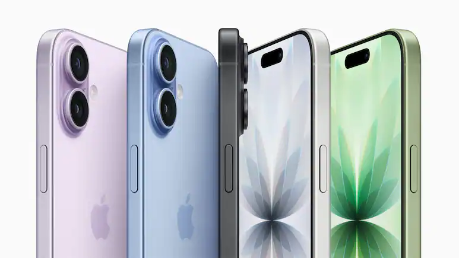

The upcoming iPhone 18 is already making headlines with early leaks suggesting a major shift in Apple’s strategy. While nothing is officially confirmed, reports indicate that Apple may introduce a split launch timeline along with performance upgrades.
This could be the first time Apple separates its base and Pro model launches.
The iPhone 18 is expected to feature Apple’s next-generation A20 chip built on a 2nm process.
Apple may introduce its own C2 modem for improved 5G performance and efficiency.
All details mentioned above are based on leaks and reports. Apple has not officially confirmed any specifications yet.
If you want the latest technology and can wait until 2027, the iPhone 18 could be worth it. Otherwise, current models still offer excellent performance.
It is expected that the base model may launch in 2027.
Yes, leaks suggest Apple may introduce the A20 chip with 2nm technology.
Reports suggest Apple may change its strategy and delay the base model launch.